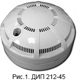
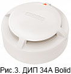
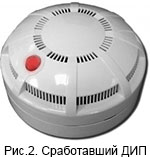
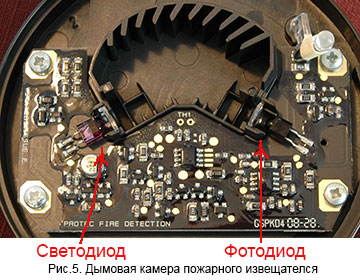
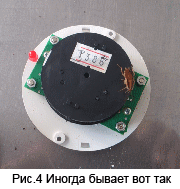

Как определить причину ложных срабатываний пожарной сигнализации?
Обслуживание пожарной сигнализации, деятельность которой может заниматься организация или специалист, обладающий лицензией МЧС. Как показывает опыт, многие не знают как определить причину ложного срабатывания пожарной сигнализации. Объясню методику выявления причины ложного срабатывания в данной статье.
В подавляющем большинстве случаев, в помещениях используются точечные дымовые извещатели.(Рис.1)  Их основное предназначение – выдавать извещение, в случае попадания дыма в дымовую камеру извещателя.
Что должен сделать дежурный персонал, в случае сработки пожарной сигнализации?
Он должен осмотреть все помещения, отвечающие за сработавшую зону, на отсутствие признаков задымления. Если признаков задымления нет, то дежурный персонал может осмотреть извещатели на наличие сработки, для того чтобы было проще определить причину сработки. Первое на что нужно обратить внимание – индикатор (светодиод) на датчике, выдавший сигнал «тревога», должен гореть постоянно.(Рис.2) Это в случае, если у вас пороговые извещатели. В случае если у вас адресно-аналоговые извещатели (например извещатели производства Bolid (Рис.3)), при срабатывании, датчик начинает моргать 2 раза в секунду, с периодом около 5 секунд. Возможны и другие варианты индикации сработки у других производителей. Так же стоит проверить, не нажат ли ручной пожарный извещатель ИПР. Он не должен быть нажат (сдвинут). В случае если его кто-то нажал, индикатор на нем, должен гореть (на практике не всегда). В случаего адресно-аналогово ИПР(Bolid), промаргивать дважды с периодом 5 секунд.
В общем возможно два варианта - дежурный передал вам (техническому специалисту) какой извещатель срабатывал и не передал.
В первом случае мы его снимаем, разбираем, осматриваем. Основные причины ложных срабатываний пожарных точечных дымовых датчиков: пыль, насекомые (тараканы, пауки, мошка, мокрицы), незаземленные светильники с электронным запуском, вышедшие из строя пожарные извещатели.
Пожарный точечный дымовой извещатель устроен так (Рис.5), что срабатывает на любое препятствие (отражающее свечение светодиода на фотоэлемент) попадающее в центр дымовой камеры, будь то – дым, пыль, пар, насекомое. Именно поэтому на кухне нужно устанавливать извещатели которые реагируют на температуру в помещении (тепловые), а не дым, иначе будут ложные срабатывания на пар.

В результате вскрытия извещателя, можно обнаружить внутри него пыль, насекомое, паутинку и  т.д.(Рис.4) Хотя возможно насекомое уже уползло или пыль незаметна глазу. В любом случае датчик нужно продуть, прочистить, так чтобы не оставить после себя кусочков ткани, волосинок и т.д. Особенно важно, чтобы в дымовой камере было идеально чисто. Если вы недавно поменяли светильник, то очень вероятно именно он и дает наводки на ваш датчик. В случае повторной сработки этого же датчика без причины после чистки, следует его заменить новым.
Во втором случае, если дежурный не определил сработавший извещатель (а основная причина сработки прибора ПС именно извещатели) остается надееться что до вашего приезда извещатель останется в состоянии сработки.
Сработавшие извещатели (ДИП порогового типа) возвращаются обратно в дежурный режим (во всех шлейфах ) если поставить шлейф в дежурный режим, в котором есть сработавший датчик (соотвественно сопротивление шлейфа не соответствует состоянию дежурного режима). Прибор при постановке шлейфа, проверяет его состояние и если оно не соотвествует дежурному режиму, снимает напряжение со всех шлейфов на несколько секунд. В результате происходит сброс всех тревог прибора. То же происходит в случае если прибор работает с перезапросом пожарных шлейфов. Даже если дежурный ничего не ставил до вашего приезда, могла быть сработка и перезапрос со снятием напряжения и вы ничего не найдете.
Причин срабатываний прибора может быть несколько.
- - Во-первых конечно это пыль и насекомые в извещателях, которые периодически дают о себе знать. Решение проблемы это травка насекомых или замена извещателей на модель имеющую защитную сетку от насекомых.
- - Если недавно меняли светильники и появились ложные сработки, то очень вероятно именно они дают сработки. Методы устранения проблемы это заземление корпуса светильника или замена датчика другим, имеющим 4ю степень жесткости по электромагнитным помехам.
- - Еще одна из возможных причин ложного срабатывания шлейфа сигнализации это наводки на сам шлейф от проводки и кабелей, проводящих высокое напряжение, которые проходят в непосредственной близости со шлейфом. По нормативам расстояние между параллельно идущим шс и силовым кабелем, должно быть не менее 50см. Тут на самом деле много от чего зависит будут ли наводки или нет. От того насколько расстояние меньше 50см между кабелем и шлейфом, от величины тока, от того экранированный у вас шс или нет.
- - Бывает, что в самом приемо-контрольном приборе что-то вышло из строя, и он выдает сработку на какой-то шлейф. Проверяется установкой оконечного резистора непосредственно в прибор и переключением линии шлейфа на резервный.
- - Так же возможно, что шлейф дает нестабильный контакт и меняется его сопротивление. Необходимо проверить шс на отсутствие наводок и наличие постоянного сопротивления, соответствующего руководству по эксплуатации прибора.
Почему иногда мы не можем определить какой извещатель сработал?
- - Вы должны быть уверены, что дежурный персонал случайно не поставил (или даже не ставил на долю секунды) шлейф в дежурный режим. Иногда вместо того чтобы нажать на кнопку 1 раз, по ошибке нажимают 3 раза. В таком случае сигнал тревога (горящий индикатор на датчике) сбрасывается, и сработавший датчик невозможно найти.
- - Проверить не может ли сработавший извещатель относится к другой зоне (т.е. реальная зона шлейфа и указанная в инструкции к прибору, отличаются).
- - Если шлейф работает по тактике перезапроса и при каждом срабатывании шлейфа происходит сброс извещателей на 5 секунд. В таком случае, если шлейф повторно не сработал в течении минуты (в зависимости от настроек прибора), сработавший датчик невозможно найти.
- - Возможно извещатель выдает сигнал тревоги, но в результате нарушений логики его работы, у него не загорается индикатор. Особенно это вероятно у старых извещателей. В этом случае может быть серьезная проблема, с тем чтобы выявить неисправный датчик. Вплоть до замены всех датчиков в шлейфе.
Была ли данная статья полезной?
Спасибо за отзыв
Если статья вам помогла, ставьте лайк
Если у вас есть какой-то вопрос, можете задать его в комментариях ниже.
Использование информационных материалов сайта ssb-nsk.ru разрешено исключительно при указании индексируемой ссылки со словом "Источник" на сайт или на страницу, содержащую этот материал.
Статьи:
30.01.2017
Как определить причину ложных срабатываний пожарной сигнализации?
10.08.2016
Зачем и как обслуживать пожарную сигнализацию?


© 2016-2017 Сервис пожарной безопасности